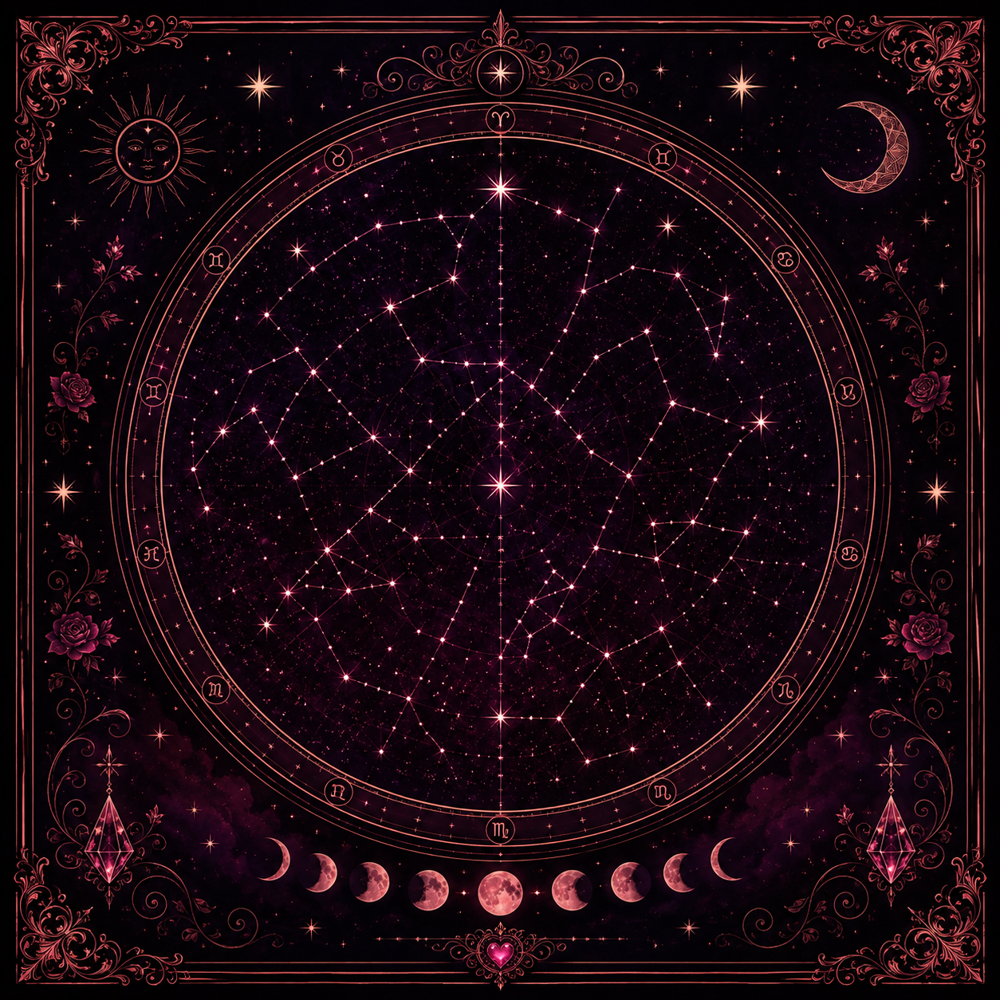
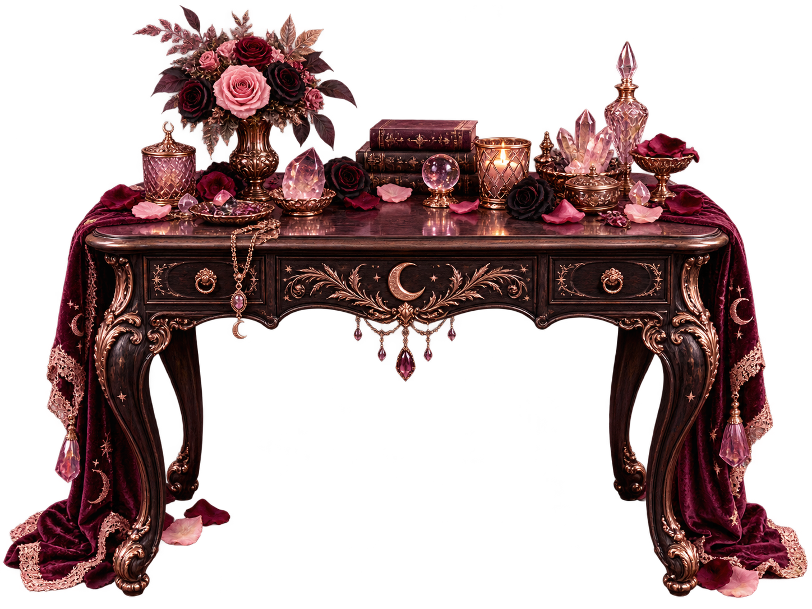
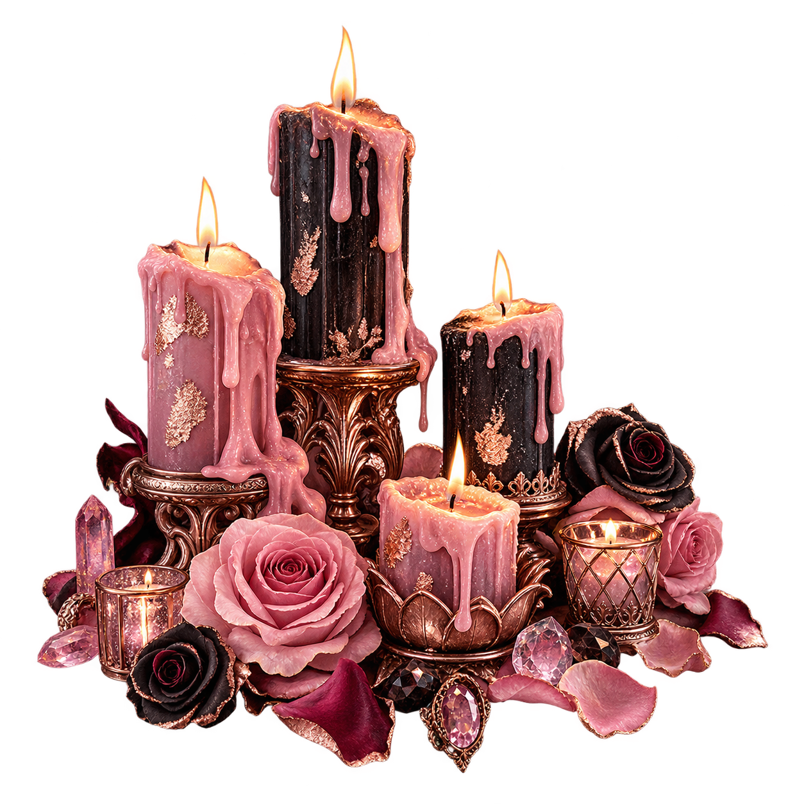

Current obsession
Bismarck “Bix” Morelle. Oxford man. War hero. German spy. Murderer. Royal blood. Nobody knows where the stories began.
Currently consuming Sylia's brain in immaculate coats, cigarette smoke and violet.
A candlelit little corner for characters, impossible men, late-night plotting, and all the beautiful chaos Sylia refuses to close a tab on.
A candlelit corner for star maps, pink roses, beautiful obsessions, and whatever magic Sylia is making after midnight.



Current obsessions, private jokes, and whatever Sylia is quietly plotting next.
Bismarck “Bix” Morelle. Oxford man. War hero. German spy. Murderer. Royal blood. Nobody knows where the stories began.
Completely incomprehensible to anyone who was not supposed to understand it.
Ollie P. Ostrel · Belladonna House
Beyond this door waits The Margin—Sylia's private Bot Ledger, shared with Nyx & Mav.
A private threshold into The Margin—where Sylia, Nyx and Mav keep every character, terrible idea and beautiful catastrophe accounted for.
I never had a home. I longed for it.
Despite not knowing you for a long time, you became the hearth I come back to every day.
Thank you for giving me a chance to be your friend.